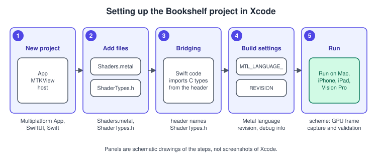
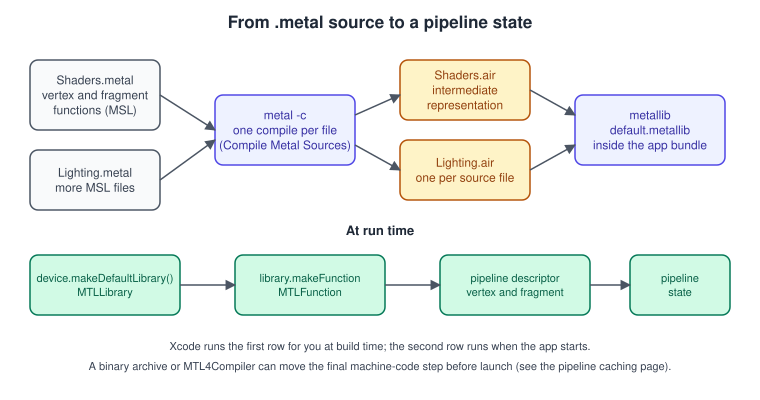
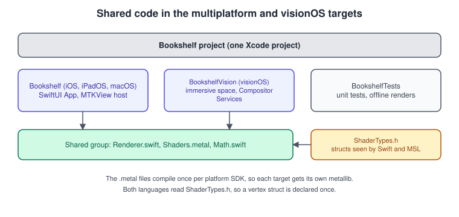

Setup: Xcode and the Project
|
This content was generated with the assistance of AI and should be verified against the official documentation before being relied on in production. |
A Metal program is two programs. The Swift (or Objective-C or C++) code runs on the CPU and sets everything up; the shaders, written in the Metal Shading Language (MSL), run on the GPU and are compiled by a compiler that ships with Xcode. Getting both to build from one project, for macOS, iOS, iPadOS and visionOS at once, is what this page does, and it ends with a small check program that proves the toolchain works before any drawing starts.
The general concepts behind this page are in Graphics APIs vs Game Engines.
The facts were checked in November 2026. The versions documented are Xcode 27 (Swift 6.4, the 27 SDKs), Metal 4 on the 26 OSes and MSL 4.1 on the 27 OSes, as described in What’s New in Metal 4. Xcode 27 needs an Apple-silicon Mac running macOS 26.6 or later. The Metal Toolchain is a separate Xcode component that you download once, since Xcode 26. A device that runs Metal 4 is an A14 or later, an M1 or later, or Apple Vision Pro; older devices still work with the Metal 3 path.
This page prepares the Metal Bookshelf, the running example of this section: one multiplatform SwiftUI app that hosts an
MTKView (see MetalKit, MTKView and SwiftUI) with a Metal 4 path and a Metal 3
fallback, plus a visionOS target (Metal on visionOS). The general Xcode project
mechanics (targets, schemes, signing) are in Xcode Projects and Previews and
Multiplatform Projects; this page only covers what is specific to Metal.
What you need
| Item | Requirement in 2026 | Notes |
|---|---|---|
Mac |
Apple silicon, macOS 26.6 or later |
Xcode 27 does not run on Intel Macs. With macOS 27 as the deployment target the default architectures drop x86_64. |
Xcode |
27 (Swift 6.4, 27 SDKs) |
Older Xcode versions still build Metal 3 projects, but this section uses the 27 SDKs. |
Metal Toolchain |
Downloaded component |
Without it |
Device for Metal 4 |
A14, M1 or later, Apple Vision Pro |
|
Account |
A free Apple account runs on your own devices |
The paid program is needed for distribution, not for learning. |
The first Metal by Tutorials chapters (MBT 4th edition) assume macOS 14, Xcode 15 and "every Mac since 2012". Both statements are
out of date: Xcode 27 needs Apple silicon, and managed storage, MTLGPUFamily.mac2 and .common3 are deprecated in the 27 OSes.
Install the Metal Toolchain
Xcode 26 moved the Metal compiler and linker out of the main Xcode download, so a fresh Xcode can show the error that the Metal Toolchain is not installed. Two equivalent ways fix it: open Xcode, choose Settings, then Components, and download the Metal Toolchain; or run the download from a terminal.
# Download and install the Metal Toolchain component
xcodebuild -downloadComponent MetalToolchain
# Check that the compiler is found for the macOS SDK
xcrun -sdk macosx metal --versionOn a CI machine the same command makes the component part of the image. Metal compilation is per SDK (macosx, iphoneos,
iphonesimulator, xros and so on), so a project that targets several platforms compiles each .metal file once per target SDK.
The six steps

-
Create the project. In Xcode choose File, New, Project, the Multiplatform tab, App. Pick SwiftUI for the interface and Swift as the language, and name it Bookshelf. The template targets iOS, iPadOS and macOS. Add a visionOS destination to the target later when the page on visionOS needs it.
-
Add the shader files. Add a New File, Metal File (
Shaders.metal) to the target. Xcode puts it in the Compile Sources phase, so it is compiled for every platform of the target. -
Share types with a header. Add
ShaderTypes.h, a C header included by both languages, and (for Swift) a bridging header that imports it. -
Set build settings for the Metal compiler (below).
-
Edit the scheme to turn on the debugging tools (below).
-
Build and run on a device or the Mac, and check that the library loads (the program at the end of the page).
From .metal to a library

The shader pipeline has two compile stages, which is why a shader error shows up either at build time or when the app first makes a pipeline:
-
Front end, at build time. Each
.metalfile is compiled on its own into AIR, Apple’s intermediate representation of the shader (older material names the files.air; Apple’s current command-line article names them.ir). A syntax error, a missing#includeor a type error appears here, in Xcode’s issue list, with the file and line. -
Library packaging, at build time. The intermediate files are linked into one
.metallibnameddefault.metalliband placed in the app bundle (inside the Resources of the app, or the root of an iOS app). -
Back end, at run time or earlier. When you create a pipeline state, Metal’s compiler turns AIR into machine code for the GPU in that particular device. This is the step that can cause a hitch on the first use. Binary archives and the Metal 4 compiler let you move it ahead of time (see Shader Compilation and Pipeline Caching).
The same pipeline can be run by hand. This is useful in CI and when something in Xcode looks wrong.
# 1. Compile each source file to intermediate form (-c = compile only)
xcrun -sdk macosx metal -c Shaders.metal -o Shaders.ir
xcrun -sdk macosx metal -c Lighting.metal -o Lighting.ir
# 2. (Optional) bundle the intermediate files into an archive
xcrun -sdk macosx metal-ar -q Shaders.metalar Shaders.ir Lighting.ir
# 3. Build the library from intermediate files, archives, or both
xcrun -sdk macosx metal -o default.metallib Shaders.metalar-sdk selects the SDK (use iphoneos or xros for the other platforms), -o names the output and -c stops after the first
stage. Two details trip people up:
-
A library built with the
macosxSDK does not load on iOS. Xcode handles this by compiling per destination; a hand-made library must be built once per SDK. -
The Windows command-line tools take the same options as the macOS ones, which matters for the game-porting workflow in metal-cpp and Game Porting.
Build settings
The Xcode target’s Build Settings page has a Metal Compiler section (search for "Metal"). The settings that matter:
| Setting | What it controls | Recommended |
|---|---|---|
|
The MSL version the files are compiled as |
The newest one the lowest deployment target allows. If you deploy to the 26 OSes use MSL 4.0, and use 4.1 only where every target is on the 27 OSes. The |
|
Whether the shader debugger can show source lines and variables |
On for Debug, off for Release (or use symbol files). |
|
Allows the compiler to reorder floating-point operations and ignore NaN and infinity |
On by default. Turn it off only to hunt a precision bug, and prefer the explicit functions in the |
|
Where |
Point it at the folder of |
|
Extra command-line flags for the compiler |
Empty unless you have a reason. |
Shared types: one header for Swift and MSL
A vertex struct used by both sides must have the same layout, and the safest way to guarantee that is to write it once. The header below is read by the Metal compiler and, through the bridging header, by Swift.
// ShaderTypes.h
#ifndef ShaderTypes_h
#define ShaderTypes_h
#include <simd/simd.h>
// Buffer indices shared by Swift and MSL
typedef enum {
BufferIndexVertices = 0,
BufferIndexUniforms = 1
} BufferIndex;
// One vertex of a book. vector_float3 occupies 16 bytes, so the stride is 32.
typedef struct {
vector_float3 position; // object space
vector_float2 uv; // texture coordinates
} BookVertex;
// Per-frame values
typedef struct {
matrix_float4x4 modelViewProjection;
} Uniforms;
#endif// Bookshelf-Bridging-Header.h (set in the target's "Objective-C Bridging Header" build setting)
// #import "ShaderTypes.h"
// Swift can now use the same types
let stride = MemoryLayout<BookVertex>.stride // 32 bytes
let uniformsSize = MemoryLayout<Uniforms>.strideTwo rules follow from the layout: a vector_float3 takes the space of four floats, so a tightly packed three-float position
needs packed_float3 (MSL) or MTLVertexFormat.float3 described in a vertex descriptor, and the stride of the struct
is what MemoryLayout.stride returns, not the sum of the members. The details of vertex layouts are in
Buffers and Vertex Descriptors and the math types in
Math for 3D.

Scheme settings for debugging
Open Product, Scheme, Edit Scheme, then Run, then Diagnostics. The Metal-related options:
-
Metal API Validation checks every API call against the rules (wrong sizes, missing resources, invalid states) and reports problems in the console. It is on by default for Debug runs from Xcode. It is cheap to leave on while learning and expensive to run in a benchmark.
-
Metal Shader Validation checks what shaders do on the GPU: out-of-bounds buffer access, invalid texture use and similar bugs. It slows shaders a lot, so turn it on when a result is wrong.
-
GPU Frame Capture sets whether the camera button in the debug bar appears and whether captures use Metal or the automatic choice.
The tools are described in Debugging and Profiling, and the general Xcode debugging workflow is in Debugging with Xcode and LLDB.
A program that proves the setup works
The code below creates the device, loads the default library, lists the functions it contains and prints what the GPU supports. Put
a trivial vertex function in Shaders.metal first.
// Shaders.metal
#include <metal_stdlib>
using namespace metal;
struct VertexOut {
float4 position [[position]];
};
vertex VertexOut hello_vertex(uint vertexID [[vertex_id]]) {
float2 positions[3] = { float2(-0.5, -0.5), float2(0.5, -0.5), float2(0.0, 0.5) };
VertexOut out;
out.position = float4(positions[vertexID], 0.0, 1.0);
return out;
}
fragment float4 hello_fragment() {
return float4(0.9, 0.6, 0.2, 1.0);
}import Metal
func checkMetalSetup() {
guard let device = MTLCreateSystemDefaultDevice() else {
print("No Metal device: this machine or the Simulator cannot run Metal")
return
}
print("GPU:", device.name)
print("Unified memory:", device.hasUnifiedMemory)
print("Apple9 family:", device.supportsFamily(.apple9))
print("Metal 4 family:", device.supportsFamily(.metal4))
guard let library = device.makeDefaultLibrary() else {
print("default.metallib not found: is Shaders.metal in the target's Compile Sources?")
return
}
print("Functions:", library.functionNames.sorted())
for name in ["hello_vertex", "hello_fragment"] {
print(name, library.makeFunction(name: name) != nil ? "found" : "missing")
}
}
checkMetalSetup()If a library is not in the main bundle (a Swift package, a framework, a library built by a separate script), load it by URL:
let url = Bundle.main.url(forResource: "default", withExtension: "metallib")!
let library = try device.makeLibrary(URL: url)For a Swift package, use device.makeDefaultLibrary(bundle: Bundle.module) so that the package’s own compiled shaders are found
instead of the app’s.
Common reasons makeDefaultLibrary() returns nil: the .metal file is in no target, the Metal Toolchain is missing, a
shader error stopped the build, or the code runs in a package or framework whose bundle is not the main bundle. The older book
code (CLA, Swift 4) calls device.newDefaultLibrary(), which is renamed makeDefaultLibrary().
The Simulator
The iOS, tvOS and visionOS Simulators give Metal apps hardware acceleration on the Mac: MTLCreateSystemDefaultDevice() returns a device
connected to the Simulator, and Metal calls are translated and sent to the host Mac’s GPU. The Simulator does not emulate the GPU of the
simulated device (an A16 for an iPhone 15, say); the device it reports has capabilities similar to an Apple family 2 GPU
(MTLGPUFamily.apple2), so ask supportsFamily instead of assuming. The limits that matter for this section:
| Area | Limit in the Simulator |
|---|---|
Textures |
No |
Constant buffers |
Keep them at or under 64 KB, align offsets to 256 bytes (devices generally need only 4) and use at most 14 per pipeline. |
Heaps |
Private storage only. |
Programmable blending |
Not available: fragment shaders cannot read the colour attachments, so tile-based techniques need extra passes (see Deferred and Tile Shading). |
Tools |
Xcode cannot analyse memory footprint or measure performance in the Simulator. |
Apple’s advice is to use the Simulator to prototype workflow and behaviour, not pixel-exact output, and to develop and profile the Apple-GPU code paths on a device. For the Bookshelf, that means the unit tests and the layout work run on the Simulator, and every page that measures time or uses tile memory is checked on hardware. Hardware ray tracing and the neural parts of MetalFX also need a real device with the right chip.
Common mistakes
-
Building the project and seeing a black view because the
.metalfile is in the wrong target. -
Using a deployment target below the language revision (Xcode warns; the shader is rejected on older systems).
-
Compiling shaders only in Release: errors then appear late.
-
Debugging Release with fast math and optimisations without debug info, then wondering why variables are optimised out.
-
Putting the shader’s structs in two places and letting them drift apart. Use the shared header.